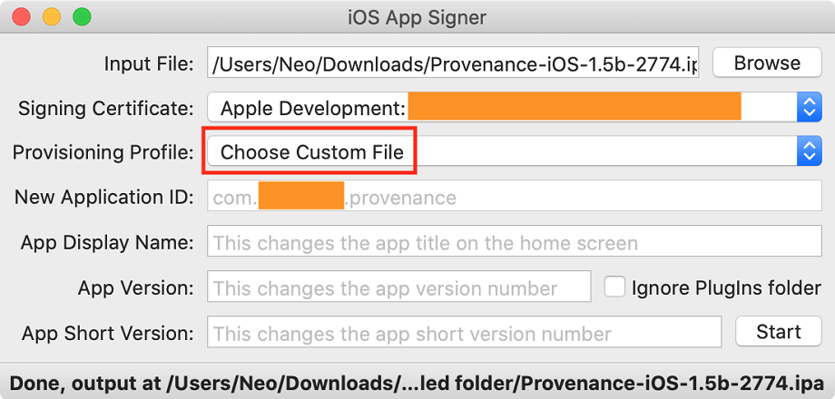
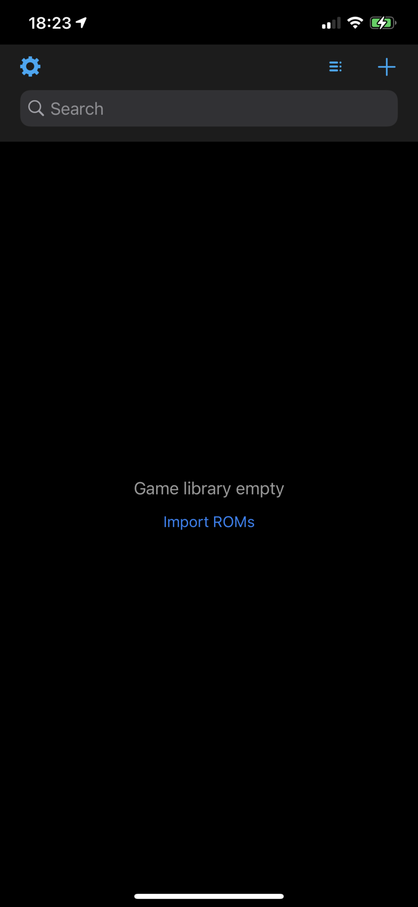
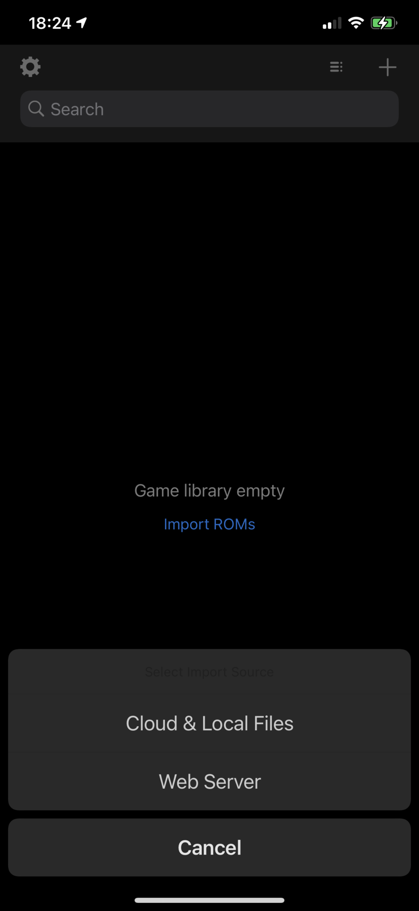
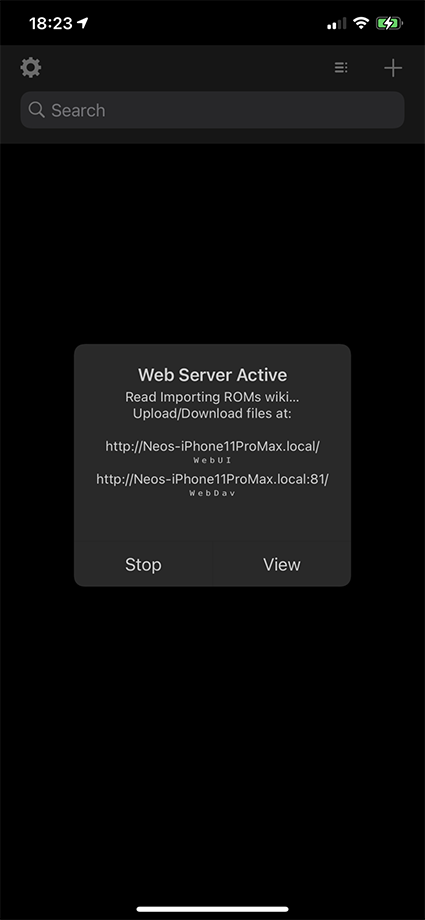
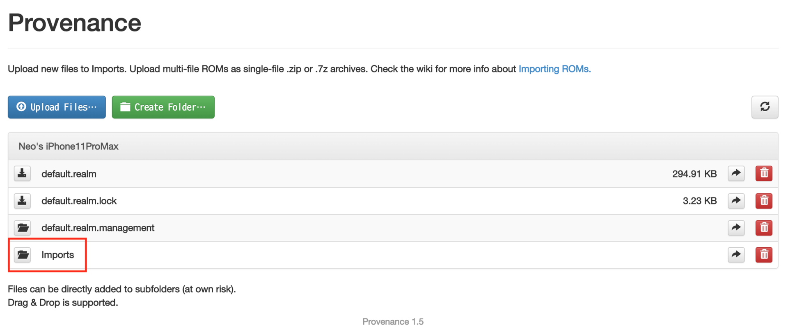
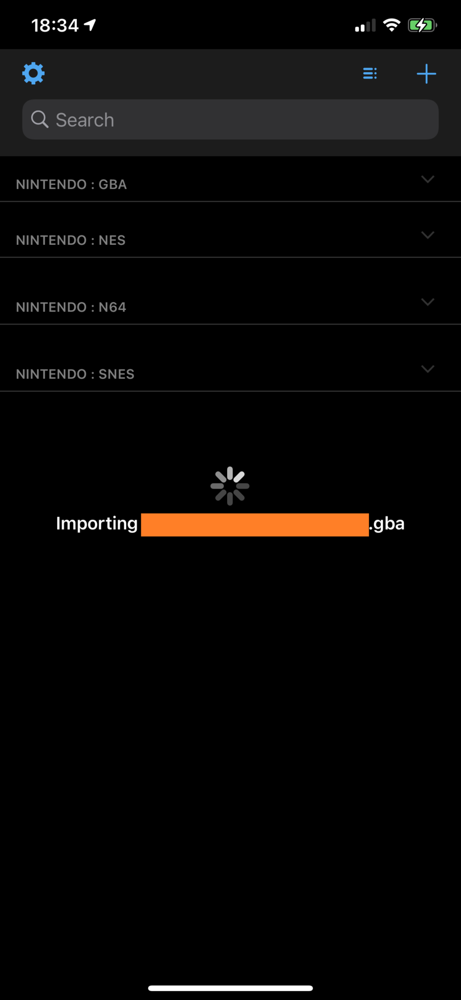
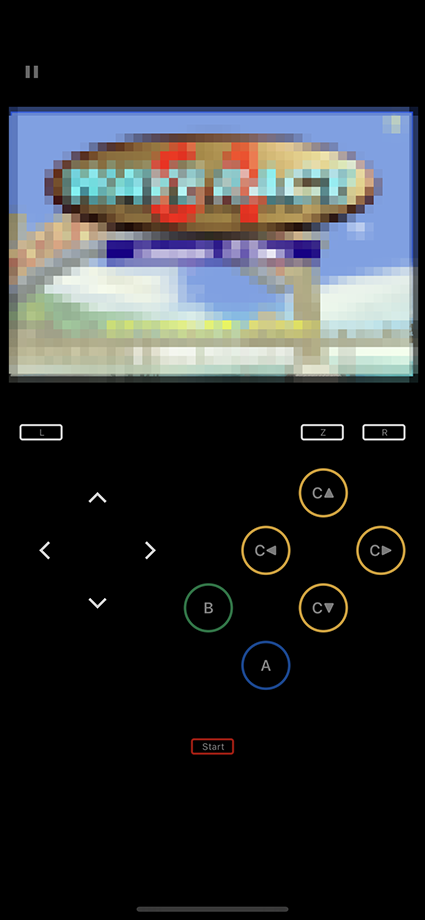

iOS 14 Beta に Provenance をインストールしてレトロゲームを遊んでみた
iOS を脱獄することなくエミュレータが導入できると聞いて、Provenance を試してみた。
- Welcome - Provenance
- GitHub - Provenance-Emu/Provenance: iOS & tvOS multi-emulator frontend, supporting various Atari, Bandai, NEC, Nintendo, Sega, SNK and Sony console systems… Get Started: https://wiki.provenance-emu.com |
目次
環境情報
- Provenance v1.5 Beta
- iPhone 11 Pro Max : iOS 14 Beta
- 12 Inch MacBook : MacOS Catalina
- Xcode v11.4.1
以上の構成で検証した。
インストール手順
今回試したのは、Sideloading というインストール手法。App Store からアプリをダウンロードするのではなく、「自作の開発中アプリ」のテイでインストールするというモノだ。
予め無料の Apple Developer アカウントを作成し、Xcode でサインインしておいて、自作の iOS アプリを7日間の期限付きで実機にインストールできるようにしておこう。
次のページから、Provenance v1.5b の .ipa ファイルをダウンロードする。
- Sideloading - Provenance
Provenance-iOS-1.5b-2774.ipa
次に、iOS App Signer というアプリを落とす。コレは、ダウンロードした .ipa ファイルのプロビジョニング・プロファイル (ユーザ証明書) を書き換えるためのモノだ。
そしたら Xcode で適当な新規アプリを作り、com.neos21.provenance のようなバンドル ID を指定して、Auto Signing を利用して Provisioning Profile を自動生成する。
プロビジョニング・プロファイルが生成できたら、$ open '~/Library/MobileDevice/Provisioning Profiles/' でディレクトリを開き、その配下から先程作ったプロビジョニング・プロファイル .mobileprovision をコピーして拾っておく。ファイル名はランダムで分かりにくいので、ファイルの更新日時などで判断しよう。
iOS App Signer を開いたら、次のように指定する。
- 「Input File」：Provenance の
.ipaファイルを指定する - 「Provisioning Profile」：「Re-Sign Only」から「Choose Custom File」を選び、控えておいた
.mobileprovisionを選択する - 「New Application ID」：プロビジョニング・プロファイルを指定したら、先程決めたバンドル ID が自動入力されているはず

ココまで出来たら「Start」ボタンを押下し、新たに .ipa ファイルを生成する。この .ipa ファイルが、自分の無料 Apple Developer アカウントでサイニングした Provenance アプリとなる。
.ipa ファイルが生成できたら、iPhone を USB 接続する。
Xcode を開き、Window → Devices and Simulators を選択し、デバイスの中に自作アプリを追加する。先程生成した .ipa ファイルを指定すれば、ホーム画面にアプリアイコンが登場するはずだ。
インストール作業はコレで完了。
7日おきにプロビジョニング・プロファイルを更新・インストールする
iOS アプリの開発経験がある人ならご存知だと思うが、無料の Apple Developer アカウントだと、実機にインストールしたアプリは7日後に起動できなくなる。
前述の手順で Auto Signing によりプロビジョニング・プロファイルを用意したが、コレを7日おきに更新し、アプリを再インストールしてやることで、引き続き Provenance が動作する。本体からアプリをアンインストールしなければ、有効期限が切れたアプリの内部データは削除されずに残るので、取り込んだ ROM やデータなどは保持される。
ROM を取り込む
iPhone にインストールした Provenance を起動すると、「Import ROMs」というリンクがあるはずなので、押下し Web Server を起動する。


Web サーバが起動すると、http://192.168.1.10/ みたいなローカル IP アドレスが表示されるので、MacOS のブラウザでこのサイトにアクセスする。

Bootstrap 製のファイラ的なウェブ画面が開くので、その中の Imports/ ディレクトリ配下にゲームの ROM ファイルをアップロードしていく。

ファイルアップロードが終わったら、アプリのトップ画面に戻る。すると、ファイルの拡張子から ROM の内容を自動判別して、ハード別のディレクトリに移動されていく。当方が試した限り、ファミコン (NES)、スーファミ (SNES)、Nintendo 64、ゲームボーイ、ゲームボーイカラー、ゲームボーイアドバンスの ROM を認識し、プレイできた。N64 の ROM に関しては、拡張子 .v64 だと認識しなかったので、.z64 にリネームしたらうまく認識された。

ゲームの内容が特定できると、どこぞの DB からサムネイルを引っ張ってきてくれて、一覧画面が分かりやすい。
サムネイルを選択するとゲームが起動する。ゲームボーイなどは使用できるエミュレータが複数あるので、いくつか試してみて、ちゃんと動作する、描画の再現度が高いエミュレータをデフォルトに設定しておくと良いだろう。
エミュレータの動作は快適で、N64 のゲームもかなりヌルヌル動く。SFC のゲームは実機以上に滑らかに動くくらいだ。
どのハードも、ゲーム画面とコントローラが iPhone 画面上に再現される。iPhone は縦向きでも横向きでも、うまくコントローラ UI を表示してくれる。ただ、画面タップで十字キーを操作するのはかなり難しい。N64 の 3D スティックのような微調整が効かないので、アクションゲームは難しいだろう。

設定画面を見ると、どうやら iPhone と何らかの方法で接続したコントローラ機器を認識して利用できるようだ。手元に使えそうなジョイパッドがないので試していない。
やろうと思えば iPhone をゲーム機にできる
外部コントローラをなんとか接続しないとゲームプレイはままならない感があるが、ゲームボーイのポケモンのような、シビアな操作が求められないゲームなら全然やれる。
プロビジョニング・プロファイルを1週間おきに更新する必要があるのは面倒だが、スペック的には iPhone7 程度でも N64 が快適に動作しそうだったので、古いスマホをレトロゲー用の携帯ゲーム機に出来そうだ。